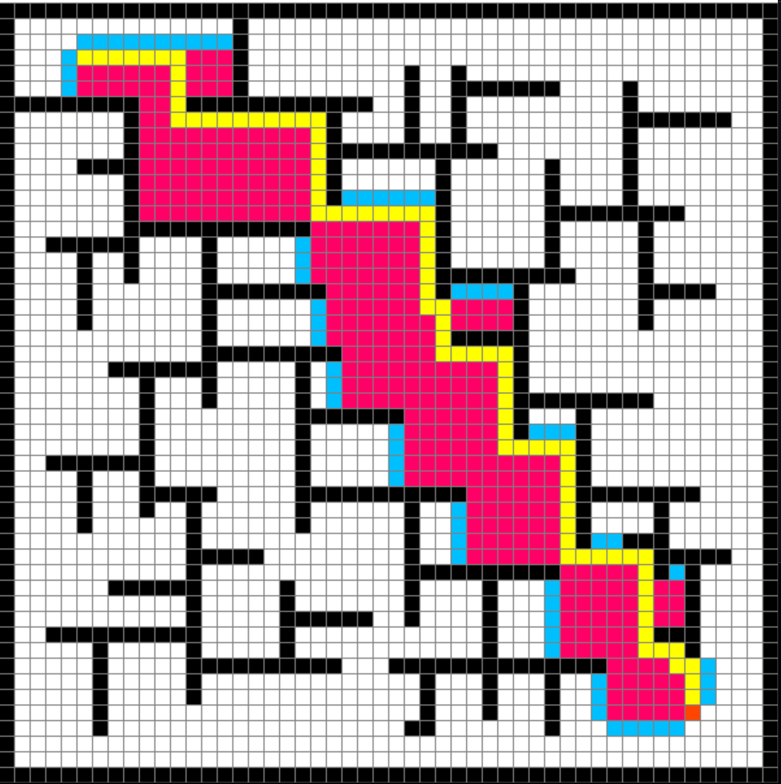
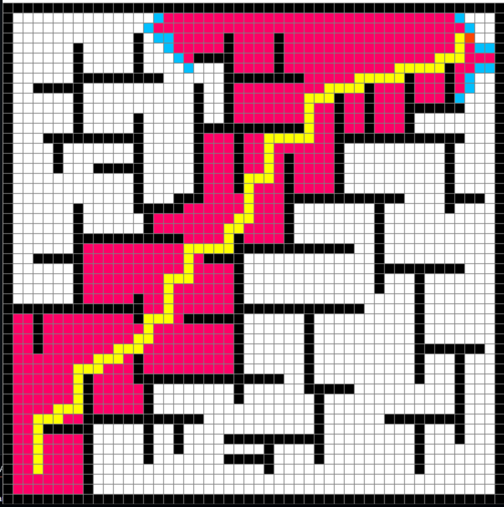
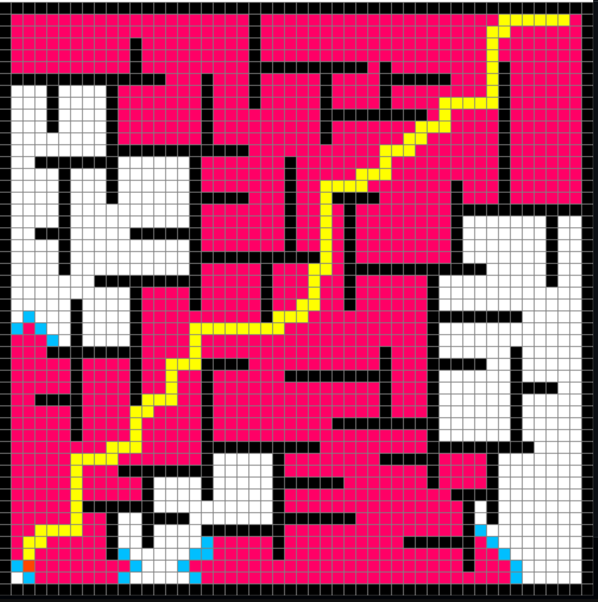

A* Search Space
Weighs the distance already travelled against a heuristic guess of what is left, so the frontier leans hard toward the goal instead of spreading evenly. The fastest of the four here, and still optimal.
Python · Pygame · 50 × 50 grid
Draw a maze, hit a key, and watch A*, BFS, Dijkstra and Prim's crawl across the grid in real time — then snap to the shortest path.
An animated illustration of a pathfinding algorithm exploring a small grid and then drawing the shortest path across it.
01 — about
Pathfinder Visualizer is a desktop app built with Python and Pygame that turns classic graph search into something you can see. Click to drop a start node, an end node and as many barriers as you like on a 50 × 50 grid, then press a key to release an algorithm on it.
Every cell the search touches lights up as it is opened and closed, so the frontier expands in front of you frame by frame — and the moment the goal is reached, the route is traced back in bright yellow. Running the same maze through A*, BFS, Dijkstra and Prim's makes the difference between a guided search and a blind one obvious in a way that pseudocode never does.
02 — algorithms supported
Hover or focus a card to see how each one spreads across the grid.
Weighs the distance already travelled against a heuristic guess of what is left, so the frontier leans hard toward the goal instead of spreading evenly. The fastest of the four here, and still optimal.
Explores layer by layer, treating every neighbour as equally cheap. The frontier grows as a clean expanding ring — wasteful, but it guarantees the shortest path on an unweighted grid.
Always expands whichever node is cheapest to reach from the start, sweeping outward in order of true distance. Essentially A* with the heuristic switched off: thorough, unguided, reliably optimal.
Borrowed from minimum spanning trees and adapted for the grid: it keeps attaching the next cheapest frontier cell to the tree it has already built, so exploration creeps outward in irregular, organic branches.
03 — screenshots
Pink is everything the search opened. Yellow is what survived.



04 — features
Left-click paints the start, then the end, then barriers. Right-click erases. Build a maze in seconds and re-run it as many times as you like.
A*, BFS, Dijkstra and Prim's all run on the same board, so you can compare their behaviour on an identical maze with a single keypress.
The grid redraws on every iteration of the search loop — no fast-forward, no pre-baked animation. What you see is the algorithm's actual frontier.
Ships at 50 × 50 inside a 650 px window. Both are plain constants in program.py — change ROWS for a coarser or a far denser board.
05 — controls
Hold the button down and drag to paint or erase a whole wall in one stroke.
06 — installation
Python 3 and a single dependency. That is the whole setup.
# 1. clone the repository
git clone https://github.com/ahmedyar7/PathFinder.git
cd PathFinder
# 2. install the only dependency
pip install pygame
# 3. run it
py main.py
On macOS or Linux use python3 main.py. A window titled
Pathfinder opens — click to place your nodes, then press Space.